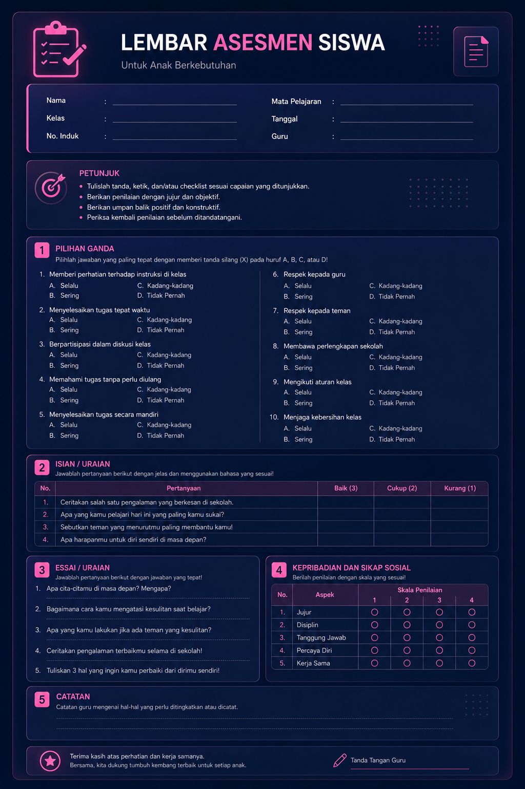
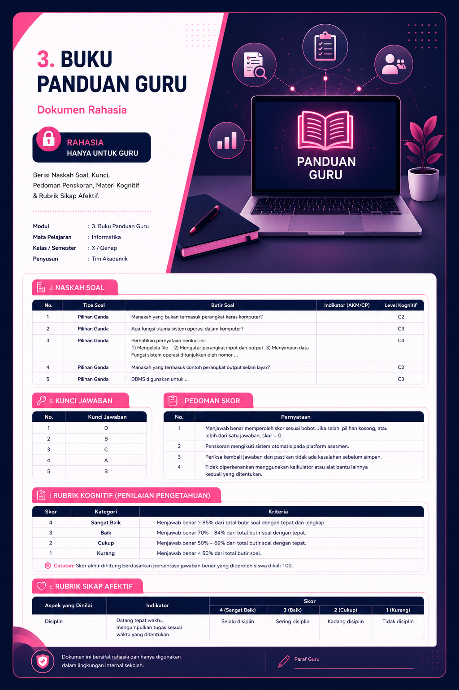
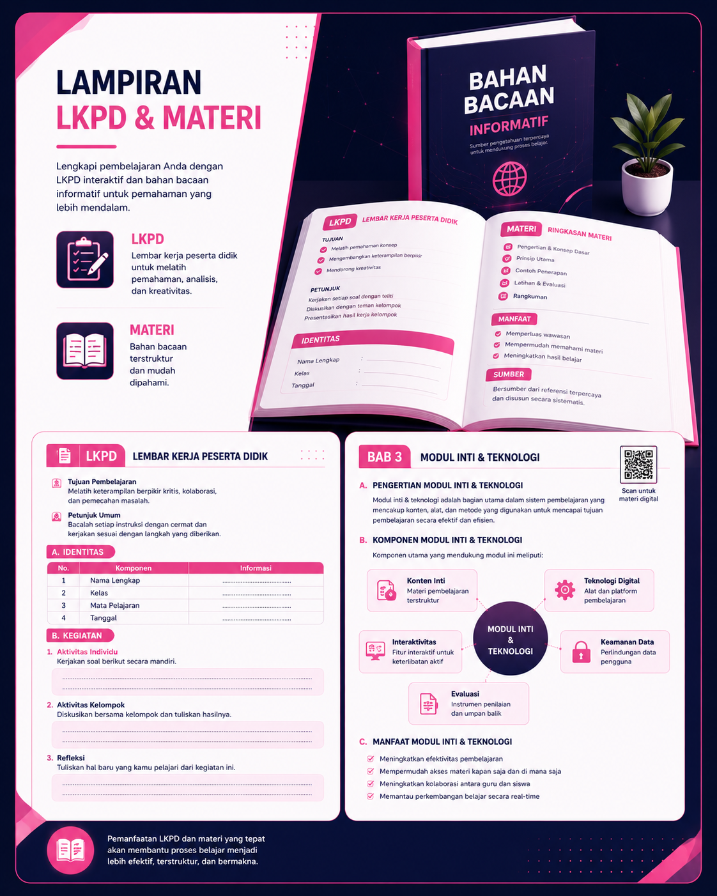
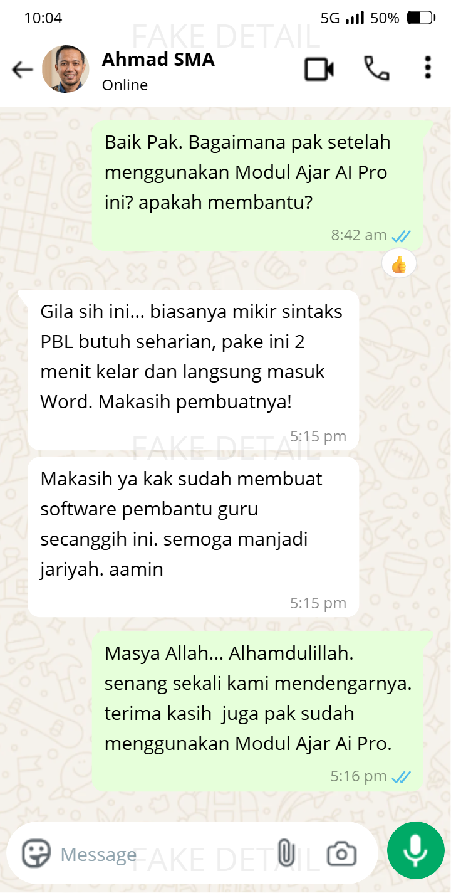
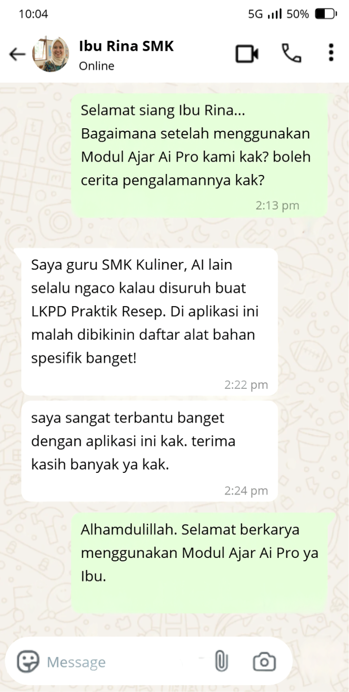

Tinggalkan Cara Lama!
Cetak RPP, LKPD & Asesmen
Hanya Dalam 120 Detik ✨
Tonton video pendek di bawah ini untuk melihat bagaimana Modul Ajar AI Pro menyelamatkan ribuan jam waktu guru Indonesia dari siksaan administrasi yang berulang. ️🌸
Jujur Saja, Apakah Ini yang Sering Anda Alami Setiap Semester? 🥺
Akhir Pekan Terampas untuk Mengetik RPP
Alih-alih berkumpul bersama keluarga, Anda malah sibuk menyusun sintaks PjBL, CP, dan TP yang memakan waktu berhari-hari.
Mencoba ChatGPT, Tapi Hasilnya Hancur
Formatnya berantakan seperti tampilan website mentah, layoutnya hancur saat dicetak, and rubrik penilaian selalu dilupakan.
Terpaksa Beli RPP Joki Ratusan Ribu
Karena mepet waktu akreditasi, Anda beli joki. Ternyata formatnya asal-asalan dan nama sekolah orang lain masih nyangkut.
Memperkenalkan Modul Ajar AI Pro
Sistem pertama di Indonesia yang menggunakan arsitektur Chained-AI Generation. Sistem ini memaksa AI bekerja 4 tahap secara terisolasi untuk menghasilkan dokumen setebal buku paket yang formatnya siap masuk ke MS Word.
Bukan Sekadar Prompt Biasa. Ini adalah Mesin Pabrik Modul.
-
🧠
Paham 100% Regulasi Kurikulum Merdeka
Otomatis memasukkan elemen 3M (Mindful, Meaningful, Joyful), Profil Lulusan, dan Sintaks Model (PjBL, TaRL, dll) ke dalam skenario ajar Anda.
-
⚙️
Dukungan Mutlak Ratusan Jurusan SMK
Satu-satunya sistem yang menyediakan database dropdown lengkap dari Teknik Alat Berat, Tata Boga, RPL, hingga Nautika Kapal.
-
🖨️
Format Fisik "Siap Cetak Kertas"
AI kami dilatih khusus untuk membuat kolom isian titik-titit (.........) dan tabel observasi kosong, bukan form input HTML yang merusak kertas cetak.
Modul Ajar AI Pro
Siap Digunakan Kapan Saja
Aktif & Siap Membantu
Memperkenalkan Modul Ajar AI Pro ✨
Sistem pertama di Indonesia dengan arsitektur Chained-AI Generation. Memaksa AI bekerja 4 tahap terisolasi untuk menghasilkan dokumen rapi siap cetak di MS Word.

MODUL AJAR AI PRO 🎀
(Desain Eksklusif 2026)
Satu Kali Klik = 4 Dokumen MS Word Selesai.
Lihat sendiri kualitas hasil generate yang langsung rapi (Justify) di Word Anda.
1. Modul Inti Terintegrasi
Identitas lengkap, terbagi per pertemuan, skenario 3M, dan sinkronisasi sintaks model otomatis.

2. Lembar Asesmen Siswa
Lembar ujian bersih siap cetak dengan 5 tipe soal standar tanpa kunci jawaban.

3. Buku Panduan Guru
Dokumen rahasia berisi Naskah Soal, Kunci, Pembahasan, Rubrik Kognitif & Rubrik Sikap Afektif.

4. Lampiran LKPD & Materi
LKM per pertemuan (alat, bahan, langkah), dan Bahan Bacaan tebal layaknya buku teks.
Kenapa Tidak Pakai AI Gratisan Saja? 🎀
| Fitur & Hasil Output | AI Biasa (ChatGPT, dll) | Modul Ajar AI Pro ✨ |
|---|---|---|
| Bahan Bacaan & Materi | Diringkas, terlalu pendek. | Super Panjang & Ekstensif Laksana Buku. |
| Format Output Kertas | Sering keluar kotak form HTML (Tidak bisa diprint). | Titik-titik & tabel kosong murni untuk tulis tangan. |
| Pemisahan Dokumen Rahasia | Soal & Kunci digabung dalam satu kertas. | Lembar Siswa Bersih + Lembar Guru (Kunci & Rubrik) Terpisah. |
| Kesesuaian Jurusan Kejuruan (SMK) | General, tidak paham materi produktif SMK. | Database dropdown khusus SMK terlengkap. |
| Ekspor Microsoft Word | Copy-paste manual, margin berantakan. | 1-Klik Unduh Otomatis, Format Justify rapi. |
Telah Menghemat Ribuan Jam Waktu Guru 💖

"Gila sih ini... biasanya mikir sintaks PBL butuh seharian, pake ini 2 menit kelar dan langsung masuk Word. Makasih pembuatnya!"
- Bp. Ahmad, Guru SMA

"Saya guru SMK Kuliner, AI lain selalu ngaco kalau disuruh buat LKPD Praktik Resep. Di aplikasi ini malah dibikinin daftar alat bahan spesifik banget!"
- Ibu Rina, Guru Kejuruan

"Alhamdulillah, bagus sekali. Modul ini sangat membantu mendukung pembelajaran berbasis teknologi dan administrasi guru. Teruskan kerja baik ini."
- Bp. Kepala Sekolah (Apresiasi & Dukungan Manajemen)
Berapa Harga Waktu Luang Anda? 🎟️🧁
Membayar joki RPP memakan biaya Rp300rb - Rp500rb per semester. Mari berhitung nilai investasinya:
Yang Didapatkan:
100% Garansi Akses Lancar
Jika ada kendala teknis dalam 30 hari pertama, tim support kami siap memandu hingga aplikasi aktif di perangkat Anda.
Pertanyaan Paling Sering Diajukan
❓ Apakah ini langganan per bulan?
Tidak. Pembayaran Rp 99.000 ini adalah sekali seumur hidup. Anda akan mendapatkan akses ke aplikasi beserta update fitur terbarunya secara gratis di masa mendatang.
❓ Kenapa harus menggunakan aplikasi ini?
Sistem ini dirancang khusus untuk kebutuhan guru Indonesia. Dengan arsitektur Chained-AI Generation, Anda mendapatkan dokumen yang siap cetak, rapi, dan sesuai kurikulum tanpa perlu repot mengedit ulang.
❓ Apakah bisa digunakan untuk jenjang SMK?
Tentu saja! Aplikasi kami sangat superior karena memiliki pangkalan data dropdown yang berisi spektrum kejuruan SMK Kurikulum Merdeka terlengkap se-Indonesia.
❓ Bagaimana cara mendapatkannya?
Klik tombol "AMBIL AKSES SEKARANG" di atas, lakukan pembayaran sekali saja, dan Anda akan mendapatkan akses seumur hidup ke aplikasi Modul Ajar AI Pro.